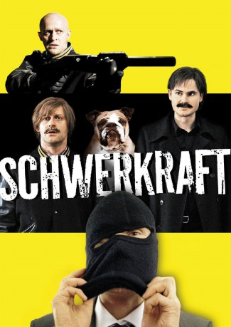
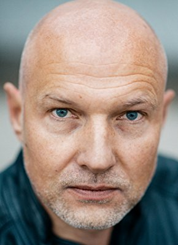

#3207 Schwerkraft
Alternativ: Gravity (Originaltitel)
 
 IMDB-Wertung: 6.7 / 10
IMDB-Wertung: 6.7 / 10  Metascore: 0
Metascore: 0 
Frederik Feinermann (Fabian Hinrichs) ist ein aufstrebender Bankangestellter, dessen Leben in geordneten Bahnen verläuft. Er ist beliebt bei seinem Chef und kann sich von seinem Geld einen angenehmen Lebensstandard leisten. Als sich ein Bankkunde, dem Frederik im Zuge der Bankenkrise den Kredit gekündigt hat, vor seinen Augen erschießt, ist das der Moment, der alles in seinem Leben verändern wird: Frederik spürt eine Leere, Aggression und explodierende Kraft in sich. Die dunklen Schatten der Vergangenheit holen ihn ein und die Schwerkraft reißt ihn nach unten.
In einer schicksalhaften Begegnung trifft er auf einen alten Bekannten, den frisch aus dem Knast entlassenen Vince Holland (Jürgen Vogel). Vince arbeitet als Aushilfskraft in der CD-Abteilung eines Shopping Centers. Früher haben die beiden zusammen in einer Punk-Rock Band gespielt. Vince ist einer der Schatten aus Frederiks düsterer Vergangenheit. Nachdem Frederik in einer Kurzschlussreaktion in das Haus seines Chefs eingebrochen ist, hilft Vince ihm aus der Patsche – es folgt der erste gemeinsame Einbruch einer nicht enden wollenden Reihe von Raubzügen. Die Lawine kommt ins Rollen und die Schwerkraft gerät zunehmend außer Kontrolle.
Jahr: 2009
Dauer: 103 Minuten
FSK: 16
Land: Deutschland Studio: Farbfilm-VerleihTonspuren:
Untertitel:
Auflösung: 1080p (1920x816) Größe: 5416 MB
Genre: Drama, Krimi, Liebe
Regisseur: Maximilian Erlenwein
Drehbuch: Maximilian Erlenwein
Soundtrack: Jakob Ilja
Darsteller:
 Jürgen Vogel als Vince
Jürgen Vogel als Vince-  Simon Werner als Typ auf Parkplatz
 Waléra Kanischtscheff als Junger Russe
Waléra Kanischtscheff als Junger Russe- Isabel Hindersin als Ehefrau I Bank
- Fabian Hinrichs als Frederick Feinermann
 Nora von Waldstätten als Nadine
Nora von Waldstätten als Nadine- Jule Böwe als Sonja
- Jeroen Willems als Reinier Grimm
 Thorsten Merten als Kollath
Thorsten Merten als Kollath- Eleonore Weisgerber als Frau Reicherts
- Judith Engel als Frau Schneider
- Henning Peker als Herr Schneider
 Fahri Yardim als Chef im Lager
Fahri Yardim als Chef im Lager- Aurel Manthei als Typ auf Schrottplatz
- Jonas Hien als Mike
- Natalia Bobyleva als Frau Podolski
- Rainer Werner als Security Ehemann
- Susanne Brandes als Security Ehefrau
- Olaf Burmeister als Personalchef Bewerbungsbüro
- Alexandre Levit als Älterer Russe
- Hartmut Schulz als Barfly
- Benjamin Succow als Mucker beim Billard
- Gregor Wundel als Mucker beim Billard
- Rainer Koschorz als Gast bei Kollath
- Tomas Jester als Maskierter Mann
- Detlef Heintze als Ehemann I Bank
- Christine Zart als Mitarbeiterin I Bank
- Lisa Jopt als Kellnerin I Café
- Spike als Putin
Datei: X:\2009(N-Z)\Schwerkraft (2009, FSK16, 1920x816).mkv seit 15.02.2016
Festplatte: HD 2009(G-Z)-2010(A-F)
 Es gibt insgesamt 99 Filme in der Gruppe '2009(N-Z)'
Es gibt insgesamt 99 Filme in der Gruppe '2009(N-Z)'